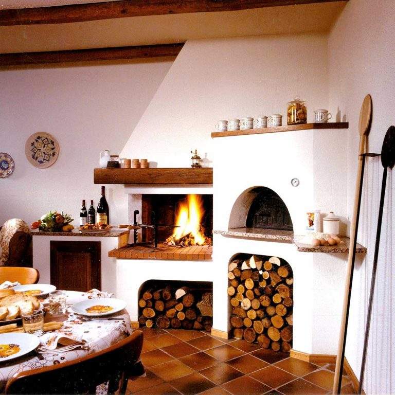
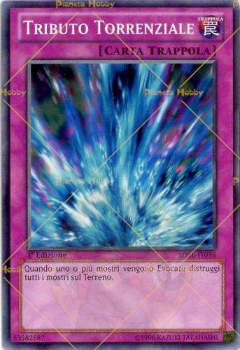

Home - Programmazione 2014- 2020
 Skip to content Scelte rapide da testiera: Home Cos'è GPU Supporto Avvisi FSE Avvisi FESR Rapporti News FAQ Contatti Calendario
4.1.4A-FSEPON-INDIRE-2015-2
Accesso al sistema Menu Home Cos’è GPU Supporto Avvisi FSE FESR FSC Close Rapporti News FAQ Contatti Eventi Seminari Close Area questionari WebinarMiglioramento nella gestione dei processi,
documentazione e monitoraggio dei Progetti
Dati statistici
Ticket lavorati nel mese di Marzo 2021:3.903
Ticket complessivi lavorati:191.195
News
24/2/2021 ISCRIZIONI APERTECiclo di webinar pubblico destinato a tutta la comunità scolastica
Arrivati al termine della programmazione 2014-2020 è previsto un...
30/4/2017 comunicazioneInvio/recupero credenziali di accesso a GPU
Per tutto ciò che riguarda le credenziali di accesso...
8/3/2021 FORMAZIONE GPUNuovo modulo opzionale per il corso online
In occasione di Fiera Didacta 2021 che si svolgerà...
24/12/2020 FORMAZIONE GPUProroga corso on line “Progettazione e gestione degli interventi finanziati nell’ambito del PON per la Scuola 2014-2020”
Si comunica che la data per concludere il corso...
Aggiornamenti avvisi
FESR 15/12/2020Manuale operativo di gestione_versione 11 dic. 2020
Avviso pubblico prot. 13194 del 24/06/2020_adeguamento spazi e aule
FSE 11/11/2020Pubblicate le slides del webinar SCUOLE STATALI
WEBINAR AVVISO PROT.19146 DEL 06/07/2020 PER LE SCUOLE STATALI
FSE 11/11/2020Pubblicate le slides del webinar SCUOLE PARITARIE
WEBINAR AVVISO PROT.19146 DEL 06/07/2020 PER LE SCUOLE PARITARIE
FSE 15/10/2020Manuale operativo gestione_scuole paritarie
Avviso prot. n. 26502 del 06 agosto 2019_contrasto alla povertà educativa
Ultimi rapporti
22/3/2021Volume VI L’educazione alla parità tra i sessi e la prevenzione della violenza di genere: quale è il contributo delle scuole che partecipano al PON?
Il presente volume propone un approfondimento metodologico delle rilevazioni condotte da INDIRE in accordo con l’Autorità di Gestione del PON...
22/3/2021Volume III Quali sono gli effetti del PON nei contesti di grave disagio socio-economico e culturale?
La pubblicazione documenta lo studio pilota di una ricerca qualitativa condotto su cinque istituzioni scolastiche con progetti autorizzati per gli...
22/3/2021Volume I QUALI SONO LE COMPETENZE E LE TECNOLOGIE SULLE QUALI LE SCUOLE HANNO INVESTITO E CHI SONO I DESTINATARI?
Questa pubblicazione contiene i principali dati che si riferiscono alla partecipazione delle istituzioni scolastiche alle iniziative del PON per la...
FESR 1/8/2017Dati in sintesi Candidatura Avviso prot. 3781 del 05/04/2017
Leggi qui il rapporto completo. ...
Note legali Privacy ORIENTAMENTO SITO